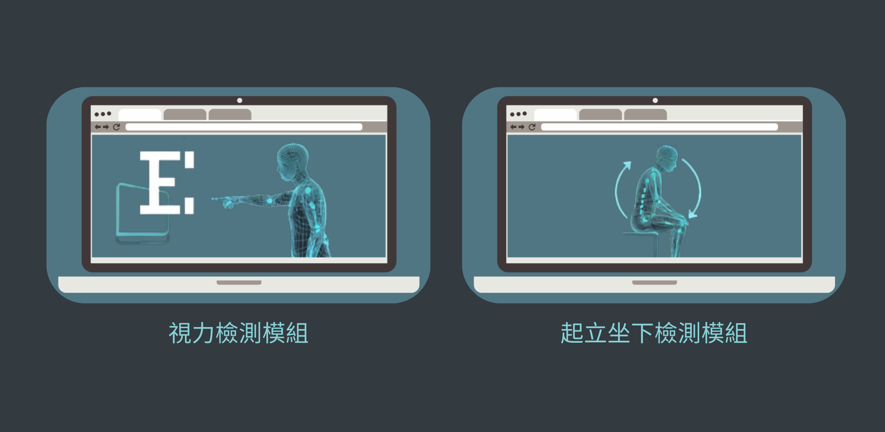

AI 人工智慧・智慧健康照護
基於影像辨識之 ICOPE 輔助系統
2025 USR 智慧醫護創新科技全國應用大賽｜第一名
本專題旨在提供高齡者友善且穩定的功能評估輔助方式， 運用 Python 與 MediaPipe 追蹤骨架關鍵點，打造非接觸式的健康評估工具。
專題目標
- 視力評估：透過手指方向辨識，協助進行視力測試流程。
- 動作評估：運用人體姿態資訊，分析坐站等動作表現。
- 友善操作：以圖形化介面整合測試流程與結果呈現。
使用技術
開發內容與學習成果
開發過程涵蓋影像擷取、手部方向判斷、人體姿態分析、測試流程設計與介面整合。 透過模組化開發與團隊協作，累積程式除錯、功能整合及問題分析的實作經驗。